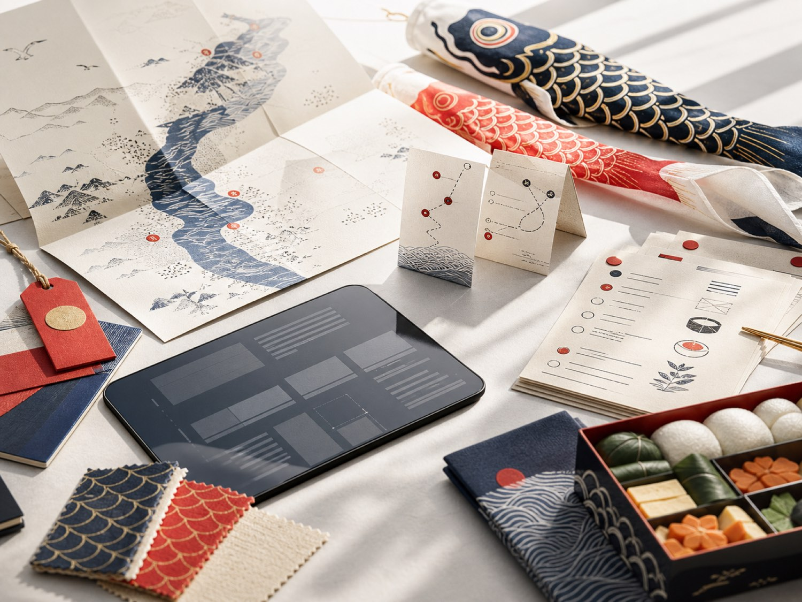

Wind-window routing
Assign rooftop raises when gusts are calm, then pivot teams when a river corridor starts to pull harder.
TomoTrail coordinates streamer routes, family kits, volunteers, and wind windows for neighborhood Children's Day celebrations.
Turn one neighborhood's worth of addresses, rooftops, lantern stalls, schoolyard workshops, and volunteer windows into a day that feels effortless from the street.

Assign rooftop raises when gusts are calm, then pivot teams when a river corridor starts to pull harder.
Track poles, fasteners, craft cards, allergy notes, pickup slots, and delivery exceptions without losing the celebratory feel.
Give each team a clean morning run: first stop, kit count, contact notes, weather risk, and tea stall handoff.
When the neighborhood starts moving, TomoTrail keeps people oriented through small, human-readable changes.
Routes open in batches so narrow streets never fill with vans at the same time.
Allergy notes, helper badges, and material counts stay attached to each workshop.
A river gust reroutes two teams and alerts families before anyone is waiting outside.
The street felt spontaneous because the plan was not.Mai K., community center coordinator, Setagaya pilot
Each kit has a human trail: who packed it, who carried it, who received it, and what changed.
Risk notes stay calm and specific: wind, late driver, missing fastener, school gate locked.
TomoTrail opens new city pilots each winter. Share the shape of your celebration and we will map the first route packet.